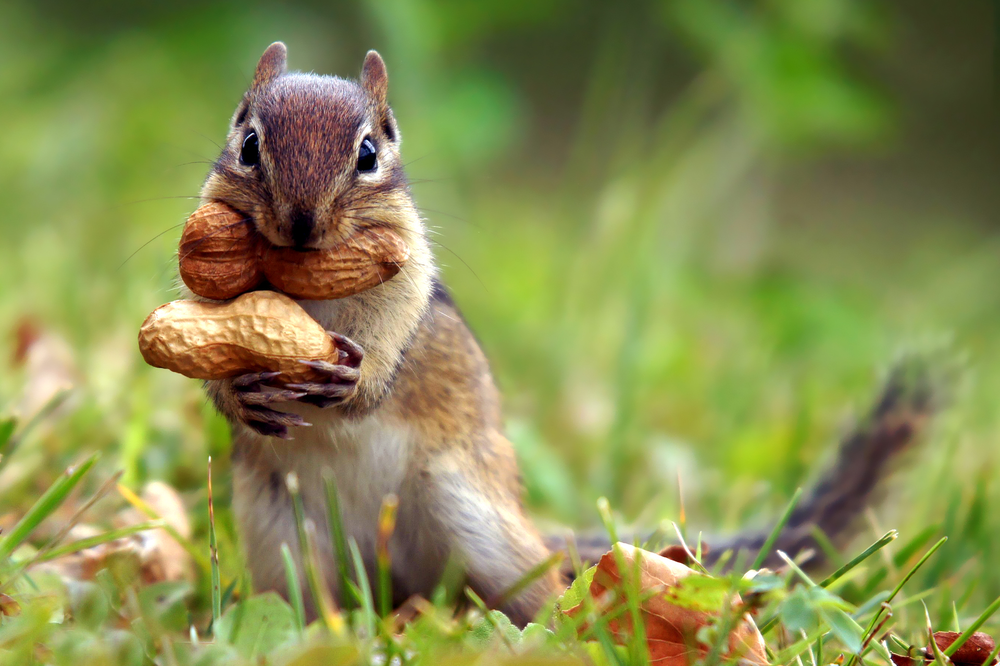
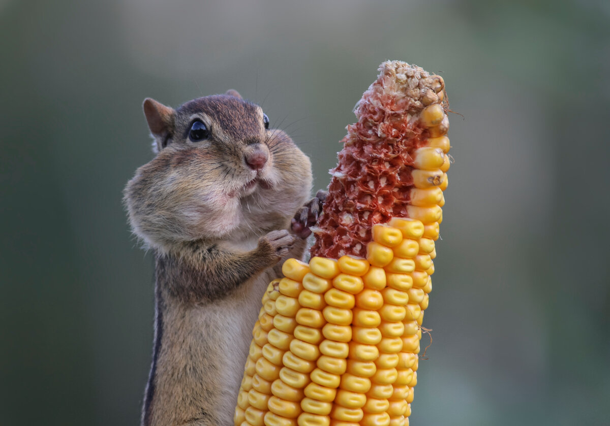
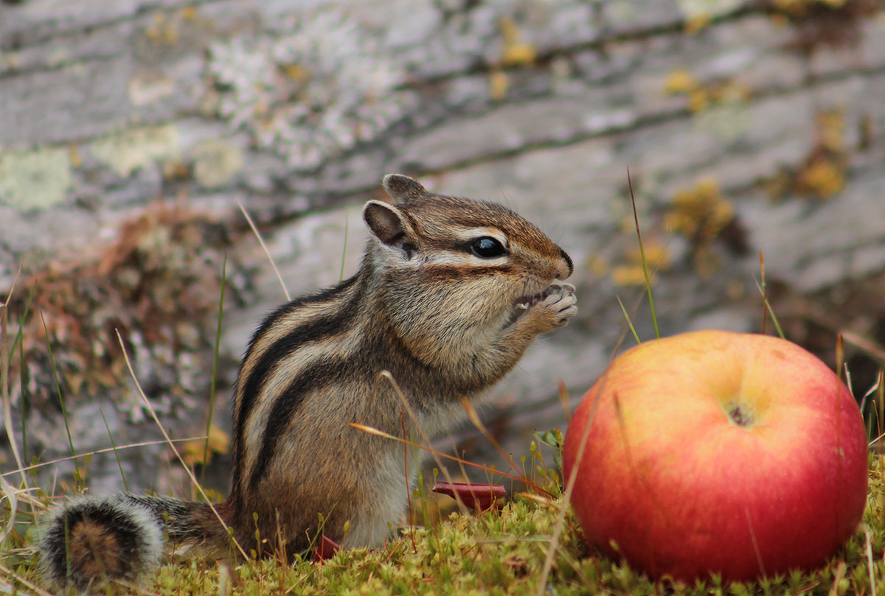

Чем питаются бурундуки?
Весной грызуны старательно исследуют поверхность почвы, ищут семена, оставшиеся с осени. Так как их в это время мало, то в корм идут побеги кустарников и деревьев, почки, листья, пока не появляются новые плоды и семена. В течение весны, лета, осени меню дополняется насекомыми, дождевыми червями, муравьями, моллюсками. Иногда зверьки поедают яйца воробьиных, падаль, даже отмечались редкие случаи, когда они охотились на мелких птиц и млекопитающих. Любят они полакомиться цветами и ягодами: брусники, вишни, малины, черемухи, рябины, калины.

Основной же пищей этих животных являются семена хвойных и лиственных деревьев. Особенно они любят кедровые орешки. В меню включают семена: копытня, дикого проса, вьющейся гречихи, лютика, горца, мышиного горошка, шиповника, зонтичных, диких злаковых, осок и огородных культур.Питаются спорангиями политриховых мхов, грибами. Большую часть рациона составляют плоды клена, вяза, липы, ильма, бересклета, маньчжурской лещины.
Основной же пищей этих животных являются семена хвойных и лиственных деревьев. Особенно они любят кедровые орешки. В меню включают семена: копытня, дикого проса, вьющейся гречихи, лютика, горца, мышиного горошка, шиповника, зонтичных, диких злаковых, осок и огородных культур.Питаются спорангиями политриховых мхов, грибами. Большую часть рациона составляют плоды клена, вяза, липы, ильма, бересклета, маньчжурской лещины.
В конце лета грызун начинает пополнять свои кладовые, собирая плоды и семена растений. Их он переносит более чем за километр. В общей сложности вес таких заготовок может доходить до 3-4 кг. В Сибири и дальневосточных землях, если случаются неурожаи кедровых орехов, животные совершают массовые перемещения к полям зерновых культур, гороха, подсолнечника или сосредотачиваются на ягодниках: брусники, черники, голубики и т.д.
 Источник